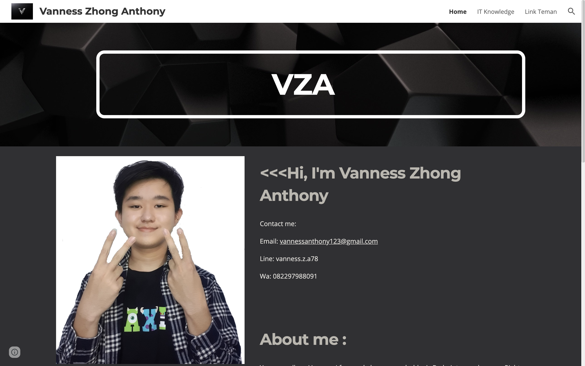
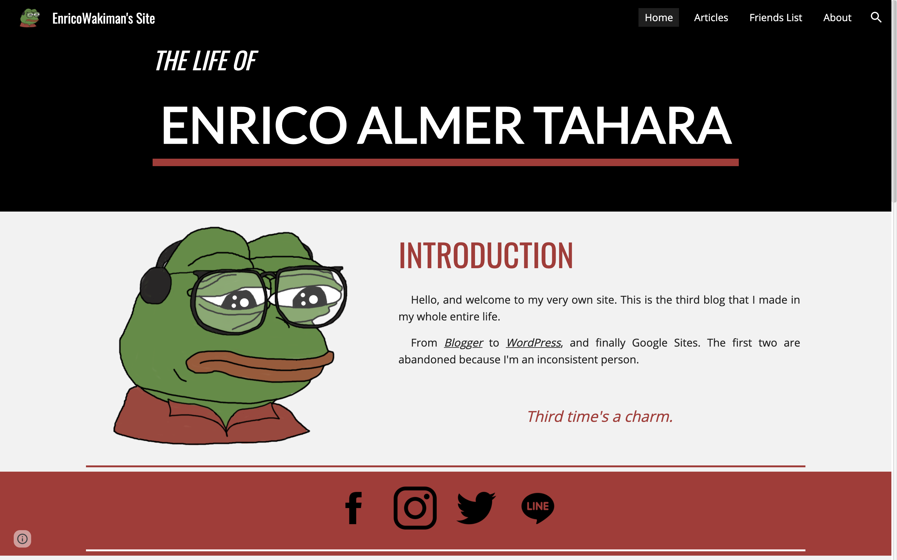

All Of My Friends
Works

Andreas Lim
Check
Syamsuddin Putra Riefli
CheckMaximus Aurelius Wiranata
CheckAnna Bella Atmadjaja
Check
Nur Azizah
CheckAlvin Gary
Check

Vanness Zhong Anthony
Check
Achmad Rijalu Arianindita
CheckDhava Rachmana Aziz
CheckJoey Wiryawan
Check
Michael Wijaya Sutrisna
Check
Daniel Aprillio
Check
Probo Krishnacahya
CheckMahadi Rafi Winata
CheckDavid Christian
CheckJustin Jap
CheckNathanael Abel Arianto
Check
Selyandaru Riskanadi
CheckOey Darryl Valencio Wijaya
CheckAverill Saladin
CheckMichael Eko
CheckKevin William
Check
Angelo Kusuma
Check
Timothy
CheckAbraar Zufar
Check
Jeffrey Verdianto
Check
Hazel Sigra Yudhatama
Check
Nathanael Suryanto
CheckFerdy Putra A
Check
Benedictus Harkristanto Ardi
Check
Atallah Dafa
CheckRenald Lie
Check
Reynaldi Kindarto
Check
Dandy Ardian Dwi Putra
Check
Timothyus Kevin Dewanto
CheckBilly Jason
CheckFelix Jonathan
CheckAdrian Donny Kurniawan
Check
Echa Danasura Mihaki Al Gibran
CheckJoshua Kouwa Budiman
Check
Shaquille Muhammad
CheckKenny Jinhiro Wibowo
CheckCaleb Christ Harianto
CheckArmaida Gholia Lestari
Check
David Alexander Sujono
CheckMichael Chandra
CheckKevin Sander Utomo
CheckFelisya
CheckJhon Felix
Check
Gavin Than
Check

Enrico Almer Tahara
Check
Bryan Anthony
CheckAlthaf Zavier Al Kautsar
Check
Bryan
CheckKezia Yohanna Ferdinandus
CheckFerdinand Bagas Haryanto
CheckLanovia Liem
Check